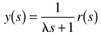
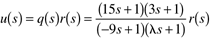

| [ Team LiB ] |
|
8.2 Practical Open-Loop Controller DesignIn order to design a physically realizable controller for the first-order process, there must be a denominator polynomial in the controller. Define a first-order filter as the following transfer function, where l is a filter tuning parameter that has units of time. We see shortly that we can think of l as a desired time constant for the output response; if a faster response is desired, then l is decreased. Now, let the controller be designed in the following fashion to make q(s) proper. which yields the following controller for a first-order process, Equation (8.7) is a lead/lag controller. Since the order of the denominator is at least as great as the order of the numerator, the design is physically realizable. The response of the output variable, y, is in this case,  That is, there will be a first-order response with a time constant of l. Contrast this with the static control law [q(s) = kq = 1/kp], which will yield a first-order response with a time constant of tp. As long as l < tp, the dynamic controller will have a faster response than the static controller. Response of Manipulated and Output Variables to Step Setpoint ChangesWe have already seen that the output response to a setpoint change is first order [e.g., Equation (8.9)]. We can also find the manipulated variable response to a setpoint change. Here we consider the dynamic controller [q(s) = f(s)/gp(s)] Notice that this is a lead/lag controller. For a step setpoint change of magnitude R, The time-domain response for the manipulated input is The output response is Figure 8-4 is a plot of y(t) and u(t), as a function of as a function of l, for a process with tp = 10 minutes and kp = 1 %/%. Notice that the manipulated input action occurs immediately at the time of the setpoint change. You should show that the magnitude is consistent with the time-domain solution [Equation (8.12)], and with the Laplace domain solution [Equation (8.11)] using the initial value theorem. Figure 8-4. Response to step setpoint change, as a function of l, for a first-order process with a time constant of 10 minutes.Issues in Dynamic Controller DesignWe have already seen that a controller needs to be proper to be implemented in a practical situation. We found that a dynamic controller could be designed by using a process model inverse, cascaded with a filter transfer function, to make the controller proper. Question 8.2.1: Can the process model inverse always be used for controller design? The answer to question 8.2.1 is shown clearly in the following example. Example 8.1: Inverse Response SystemConsider the following transfer function, where b is a positive real number, indicating a positive zero (yielding inverse response) in the process transfer function. If we use the previous design procedure for a dynamic open-loop controller, we find and if we let f(s) = 1/(ls + 1), we obtain Notice that the zeros of the process model become the poles of the controller, when the model inverse is used for control-system design. This creates an unstable controller and the possibility of unbounded, manipulated variable action. Therefore, if a process has a RHP zero, this zero must be factored out before using the model inverse for the controller design. Answer 8.2.1: The process model cannot simply be inverted to form the controller. It must be factored so that the resulting controller is stable and realizable. Look at Equation (8.16). If we simply take out the unstable pole, we have Notice that this is not acceptable, because q(s) is not proper. To make it proper, we can simply increase the order of the filter. where we have used a second-order filter, f(s) = 1/(ls + 1)2, for the controller design. What kind of output response will be achieved? Notice that the output will exhibit an inverse response when there is a step setpoint change. This is an important result—process inverse response behavior cannot be removed by any stable control system. Example 8.2: Numerical Example of an Inverse Response SystemConsider the following transfer function, which has a RHP zero at 1/9 min-1: Compare the responses (input and output) under open-loop control, for the two cases: (i) when the RHP pole is removed from the controller and (ii) when the RHP pole is not removed from the controller (i.e., the controller is unstable) (i) When the unstable controller pole is removed, we have from Equation (8.18) which yields the following manipulated and output variable response: For a unit step change in setpoint, the output and manipulated variable responses are shown in Figure 8-5 for l = 5 minutes. Notice that the inverse response appears in the output variable, and that the manipulated input changes immediately when the setpoint change is made. The reader should be able to show that the manipulated input change is consistent with that predicted by the initial value theorem. Figure 8-5. Unit step setpoint response when controller is stable (l = 5 minutes).(ii) When the unstable controller pole is not removed, we have from Equation (8.16) which is an unstable controller. This controller yields the manipulated variable response  The output response is The output and manipulated variable responses are shown in Figure 8-6 for l = 5 minutes. Notice that the inverse response does not appear in the output variable, but the manipulated variable is unbounded (unstable). This is often called internal instability. Figure 8-6. Unit step setpoint response with unstable controller (note scale of response).This last example illustrated an important point that is not often mentioned in textbooks. If only the process output is calculated or plotted, then the engineer may overlook the fact that a manipulated variable is becoming unbounded. Good output performance does not ensure feasible manipulated variable action. When designing the open-loop control system of Figure 8-3, it is critical that both the controller and the process be stable. If the process is unstable, an open-loop controller cannot be used. The proper control-system design procedure for open-loop unstable systems is covered in Chapter 9. |
| [ Team LiB ] |
|